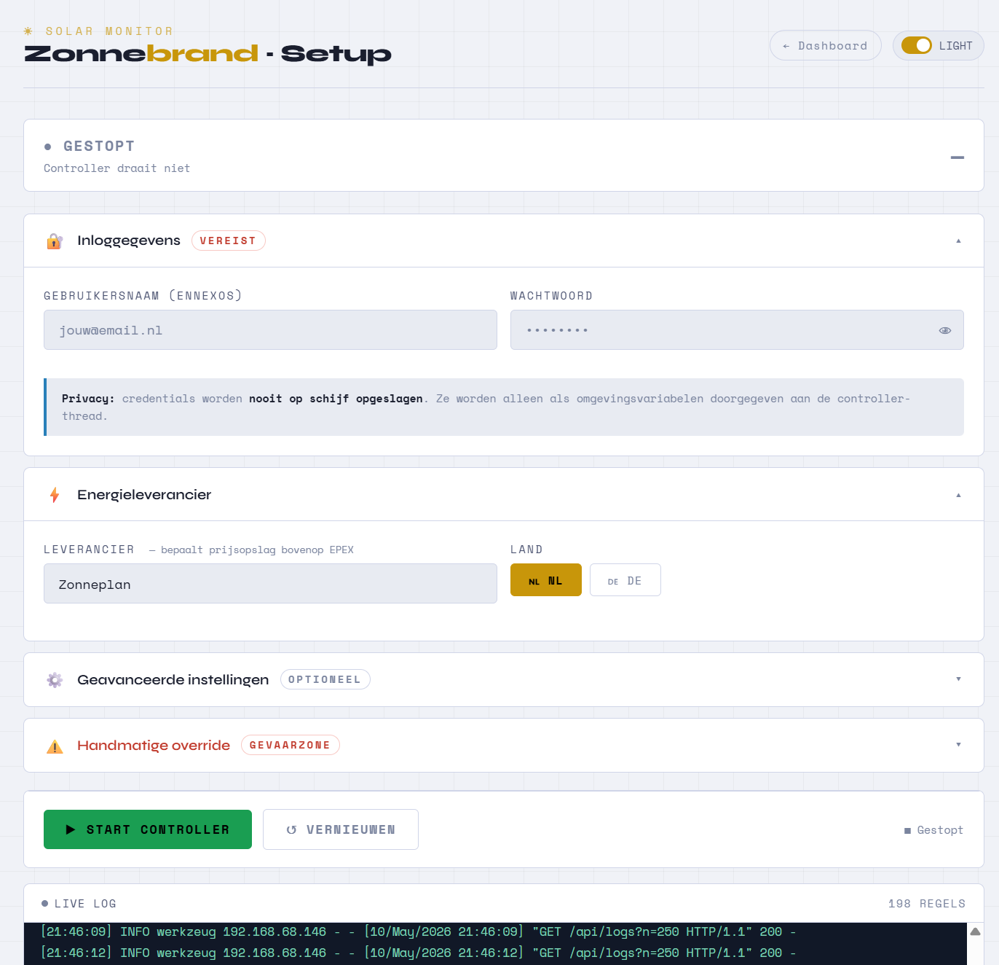
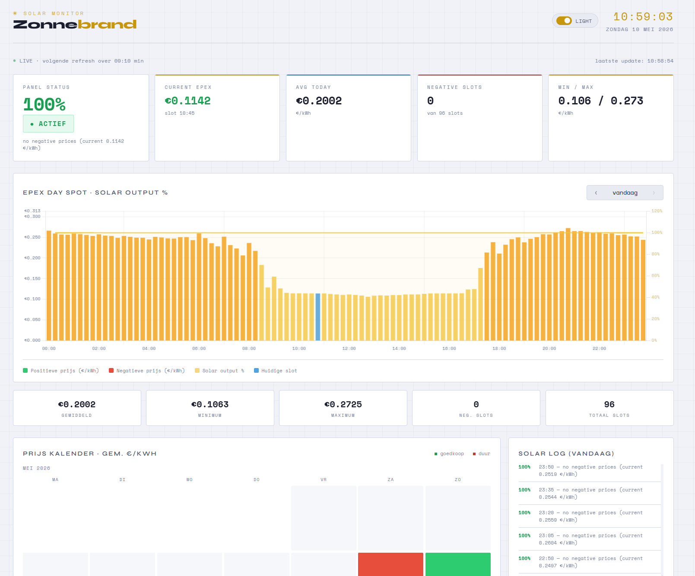

Server
The Zonnebrand Server is a live web interface that visualises real-time
EPEX day-spot prices, solar panel output history, and the current inverter
status — all served locally from the same machine that runs zonnebrand.
Launch
Start the dashboard server in a separate terminal (or as a background process):
python server.py
Then open your browser and go to:
http://localhost:8000
http://192.168.XX.XXX:8000
To keep the dashboard running alongside zonnebrand, you can start both processes in parallel, for example with tmux or screen, or by using nohup:
Note
epex.csv and status.csv are created automatically the first time zonnebrand runs. You do not need to create them manually.
Tip
On a Raspberry Pi or home server, add both commands to /etc/rc.local
or create two systemd services so they start automatically on boot.
Setup
The setup-dashboard is divided into various sections to setup your parameters and run the server.
{kind=link}

The Zonnebrand setup Dashboard to make the settings using user interface.
Dashboard
The dashboard is divided into four areas.
{kind=link}

The Zonnebrand Dashboard, showing today’s EPEX prices with the solar output overlay, the status cards, and the historic price calendar.
- Status cards (top row)
A live summary that refreshes every 60 seconds.
Panel Status — whether the inverter is at 100 % (active) or 0 % (curtailed) with the full decision reason from
decide_target().Current EPEX — the €/kWh price for the current 15-minute slot, coloured green when positive and red when negative.
Avg Today — the mean price across all slots seen so far today.
Negative Slots — how many of today’s 96 slots carry a negative price.
Min / Max — the cheapest and most expensive slots of the day.
An orange warning banner appears automatically when a negative price window is coming up later today.
- EPEX price chart with solar overlay (main panel)
A dual-axis bar + line chart covering a full day of 15-minute slots.
Green/yellow/orange bars show positive EPEX prices (€/kWh, left axis).
Red bars mark negative-price slots.
The current slot is highlighted in blue.
A yellow filled line shows the recorded solar output percentage from
status.csv(right axis, 0 – 100 %).Use the ‹ and › buttons to browse to any historical date that has been logged in
epex.csv.
- Price calendar heatmap (bottom left)
A monthly calendar where each day is coloured on a green → yellow → red scale according to its average EPEX price. Days with a negative average are shown in dark red. Click any cell to jump directly to that day in the main chart.
- Solar log (bottom right)
A reverse-chronological list of every decision logged in
status.csvfor the currently viewed day, showing the time, the target percentage, and the reason string.
Dark / light mode
A toggle in the top-right corner of the header switches between the default
dark theme and a light theme. The preference is saved in the browser’s
localStorage and restored automatically on the next visit.
Auto-refresh
What refreshes |
Interval |
|---|---|
Status cards |
Every 60 seconds |
Full chart + log |
Every 15 minutes |
Countdown timer |
Visible in the top bar |
New data written to the CSV files by zonnebrand is picked up
automatically on the next scheduled refresh — no server restart required.